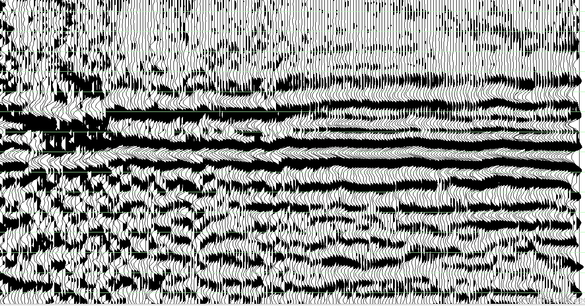

DeepTrace Docs
Phoenix is a refraction statics program designed to run the largest jobs. Using advanced physical modeling and massively parralelized algorithms, Phoenix delivers the highest quality near surface models in hours rather than weeks.
You can find an old PDF guide here.